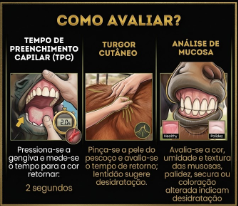

Guia Completo de Condição Clínica, Instalações e Transporte
É fundamental conhecer os sinais habituais do animal para identificar qualquer alteração precocemente. A linguagem corporal é uma das ferramentas mais importantes para o manejo seguro e para a detecção de dor ou desconforto.

Teste do Turgor Cutâneo: Puxe a pele do pescoço. Se demorar > 2s para voltar, há desidratação.
Mucosas Orais: Devem estar rosadas e úmidas. Verifique também: narinas, olhos, vagina/pênis e ânus.
Sinais de Alerta: Fezes muito secas e urina escura.
Cor das Mucosas: Mucosas pálidas indicam redução de glóbulos vermelhos.
TPC (Tempo de Preenchimento Capilar): Pressione a gengiva. O normal é voltar à cor original em até 2 segundos.